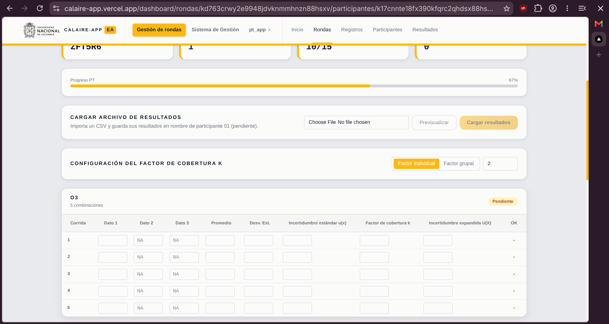

Use la columna tiempo y el cronograma para identificar cada nivel y periodo horario.
Instrucciones del participante · Ronda 3
Cálculo y reporte de resultados
Criterios para seleccionar datos por contaminante y nivel, calcular promedios horarios válidos, reportar desviación estándar e incertidumbre, y enviar el informe final PT de la Ronda 3.
Excluya periodos de estabilización y registros no válidos. No mezcle niveles ni contaminantes.
Promedie solo periodos con mínimo 45 datos válidos de 60 esperados.
Diligencie datos, promedio, desviación e incertidumbres, y envíe el informe final PT.
1. Archivos entregados
Use únicamente el archivo correspondiente a cada contaminante.
EA-PP2026-R3_O3.csvpara ozono (O3).EA-PP2026-R3_NO.csvpara monóxido de nitrógeno (NO).EA-PP2026-R3_NO2.csvpara dióxido de nitrógeno (NO2).
Use la columna tiempo como guía para ubicar cada registro en el cronograma entregado. Así podrá identificar los datos pertenecientes a cada nivel, separar los periodos horarios de cálculo y excluir los periodos de estabilización.
2. Columna de resultado
| Contaminante | Columna que debe usar |
|---|---|
O3 | O3 (invitado1) |
NO | NO (Invitado1) |
NO2 | NO2 (Invitado1) |
Para NO y NO2, no use columnas correspondientes a otro contaminante ni la columna NOx (Invitado1).
3. Selección de datos
Para cada contaminante y nivel:
- consulte la columna
tiempoy compárela con el cronograma para ubicar el inicio y el final de cada nivel; - separe los datos en periodos horarios de acuerdo con el cronograma;
- use solamente los datos comprendidos dentro del periodo asignado;
- excluya los periodos de estabilización;
- no mezcle datos de niveles diferentes;
- no mezcle contaminantes;
- no modifique los límites establecidos;
- no complete resultados con datos de estabilización o de otro nivel;
- no interpole ni estime valores faltantes;
- aplique los criterios de validación y exclusión definidos en su procedimiento interno;
- conserve la trazabilidad de los datos usados y excluidos.
Criterio mínimo de datos válidos
Los datos tienen frecuencia de un registro por minuto. Para calcular el promedio de un periodo horario debe contar con mínimo 75 % de datos válidos, equivalente a 45 datos válidos de 60 esperados.
- calcule el promedio horario solamente cuando cumpla este criterio;
- calcule la desviación estándar horaria usando los mismos datos minutales válidos incluidos en el promedio;
- excluya los registros no válidos antes de verificar el cumplimiento del 75 %;
- no complete la cantidad mínima mediante interpolación, estimación, ceros ni datos externos al periodo horario;
- si el periodo no alcanza el 75 %, no calcule el promedio horario y documente la situación.
4. Datos no numéricos, faltantes y negativos
Registros como Samp<, celdas vacías u otros contenidos no numéricos no deben convertirse en cero.
Trátelos según su procedimiento interno. Cuando no sean resultados válidos, exclúyalos y documente el tratamiento aplicado. No los reemplace mediante interpolación o estimación.
Los valores negativos numéricos siguen siendo resultados numéricos. No deben eliminarse solamente por ser negativos. Cualquier exclusión debe tener sustento técnico y documental.
5. Nivel inicial o nivel cero
Para este ejercicio, el nivel 1 corresponde al nivel inicial o nivel cero.
Para el nivel 1:
- identifique el periodo horario correspondiente mediante la columna
tiempoy el cronograma; - verifique que la hora contenga mínimo 45 datos minutales válidos;
- calcule el promedio de los datos minutales válidos y regístrelo en
Dato 1; - calcule la desviación estándar con los mismos datos minutales válidos usados para obtener
Dato 1; - deje
Dato 2yDato 3sin diligenciar; - registre en
Promedioel mismo valor reportado enDato 1; - registre la incertidumbre estándar, el factor de cobertura y la incertidumbre expandida según corresponda.
6. Demás niveles
Para cada nivel diferente del nivel inicial calcule y reporte tres promedios horarios:
1Promedio de la primera hora en
Dato 1.2Promedio de la segunda hora en
Dato 2.3Promedio de la tercera hora en
Dato 3.Cada promedio horario debe
- corresponder al periodo identificado mediante la columna
tiempoy el cronograma; - usar solamente datos minutales válidos del nivel;
- contar con mínimo 45 datos válidos de 60 esperados;
- excluir los periodos de estabilización;
- conservar soporte y trazabilidad de los datos empleados.
Después de obtener los tres promedios horarios
- reporte el promedio de
Dato 1,Dato 2yDato 3en el campoPromedio; - calcule y reporte en
Desv. Est.la desviación estándar de esos tres promedios horarios.
Si un periodo horario no cumple el criterio de 75 %, no calcule el promedio correspondiente y deje el campo sin diligenciar. No complete campos faltantes con ceros, datos estimados, datos de otro nivel o datos de estabilización.
7. Campos que debe diligenciar
Vista de tabla para reporte:

Para cada corrida diligencie:
Dato 1, Dato 2 y Dato 3
Resultados obtenidos para el nivel evaluado.
- nivel inicial: solamente
Dato 1; - demás niveles:
Dato 1,Dato 2yDato 3; - los campos que no correspondan deben quedar vacíos;
- no escriba
NA, texto ni unidades dentro de los campos numéricos.
Promedio
- nivel inicial: reporte el mismo promedio horario registrado en
Dato 1; - demás niveles: reporte el promedio de los tres promedios horarios registrados en
Dato 1,Dato 2yDato 3.
Desv. Est.
- nivel inicial: reporte la desviación estándar calculada con los datos minutales válidos usados para obtener
Dato 1; - demás niveles: reporte la desviación estándar de los tres promedios horarios registrados en
Dato 1,Dato 2yDato 3.
Incertidumbre estándar u(x)
Reporte la incertidumbre estándar asociada al resultado. El valor debe ser mayor o igual a cero.
Factor de cobertura k
Reporte el factor de cobertura usado según su procedimiento interno. El valor debe ser mayor o igual a cero.
Puede seleccionar factor individual para diligenciar el valor por corrida o factor grupal para aplicar el mismo valor a todas.
Incertidumbre expandida U(X)
Reporte la incertidumbre expandida asociada al resultado. El valor debe ser mayor o igual a cero.
8. Incertidumbre de medición
Estime la incertidumbre según su procedimiento interno vigente.
Mantenga disponibles:
- fuentes de incertidumbre consideradas;
- método de evaluación;
- presupuesto de incertidumbre;
- factor de cobertura aplicado;
- cálculos;
- registros de soporte.
No se exige reemplazar el modelo interno por un modelo común para la ronda. El resultado debe ser técnicamente sustentable y trazable.
9. Unidades y expresión de resultados
- Reporte
O3,NOyNO2ennmol/mol, salvo instrucción oficial diferente. - Use la misma unidad para resultados, promedio, desviación estándar e incertidumbres.
- No escriba la unidad dentro de los campos numéricos.
- Use punto como separador decimal.
- Aplique los criterios de redondeo definidos en su procedimiento interno.
- Mantenga coherencia entre las cifras decimales del resultado y su incertidumbre.
- Documente correcciones, conversiones o factores aplicados.
- No cambie resultados negativos a cero sin sustento técnico.
10. Guardado y envío
- Complete cada fila correspondiente a contaminante y corrida.
- Verifique el indicador OK de cada fila.
- Corrija las filas marcadas con error antes de continuar.
- Confirme que el progreso esté completo.
- Revise todos los valores antes de seleccionar Enviar informe final PT.
- Después del envío final, verifique el mensaje de confirmación.
11. Verificación final
- Se usó la columna correcta para cada contaminante.
- Se consultó la columna
tiempopara ubicar cada periodo según el cronograma. - Se excluyeron los periodos de estabilización.
- No se mezclaron niveles ni contaminantes.
- Los datos no numéricos no se convirtieron en cero.
- Cada promedio horario se calculó con mínimo 45 datos válidos de 60 esperados.
- El nivel inicial contiene solamente
Dato 1y la desviación calculada con datos minutales válidos. - Los demás niveles contienen hasta tres promedios horarios válidos.
- La desviación estándar de los demás niveles se calculó con los tres promedios horarios.
- Los campos no aplicables quedaron vacíos.
- El promedio y la desviación estándar corresponden a los resultados reportados.
- La incertidumbre estándar, el factor de cobertura y la incertidumbre expandida están diligenciados.
- Todos los valores numéricos usan punto decimal y no incluyen unidades.
- Todas las filas muestran estado correcto.
- Los cálculos, exclusiones e incertidumbre conservan soporte técnico.